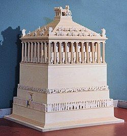

| The Mausoleum at Halicarnassus (Bodrum, Turkey), was a massive tomb built for Mausolus, the ruler of Caria, c. 350 BCE. The marble structure was so immense and decorated with such an array of striking sculptures that it made it onto the list of the Seven Wonders of the Ancient World and thereafter gave its name to any large funeral monument - a mausoleum. Following a damaging earthquake, and with many elements cannibalised for the 15th century CE Bodrum Castle, the Mausoleum no longer survives. Podium and column fragments do survive, while some substantial pieces of the Mausoleum's decorative sculpture can today be seen at the British Museum in London.
Mausolus & Halicarnassus
Mausolus (Mausolos or Mausollos) was a satrap of Persia who ruled semi-independently in Caria in modern southwest Turkey from c. 377 BCE, and Halicarnassus (or Halikarnassos) was selected as his capital c. 370 BCE. Halicarnassus was already a thriving ancient city, famous as the birthplace of the celebrated 5th-century BCE historian Herodotus and with a history dating back to the Bronze Age. Mausolus made the city even grander, adding many fine buildings including a new harbour, palace and several temples. Caria prospered thanks to Mausolus' control and development of coastal cities, which were then able to better capitalise on eastern Mediterranean trade, especially with Rhodes. The ruler's construction of a better road network to connect inland sites further improved the region's prosperity and tax revenues came flooding into the capital.
THE ACCUMULATED RICHES IN THE ROYAL COFFERS OF CARIA WOULD BE SPENT ON ONE OF THE MOST LAVISH PERSONAL BUILDING PROJECTS EVER SEEN IN THE ANCIENT WORLD.
The accumulated riches in the royal coffers of Caria would be spent on one of the most lavish personal building projects ever seen in the ancient world. When Mausolos died c. 353 BCE, his body was entombed in what became known as the Maussolleion or Mausoleum at Halicarnassus. The tomb, planned by the ruler for himself and his descendants from c. 367 CE, was finished off by his sister-wife Artemisia. It was probably completed around 350 BCE, although Artemisia herself died the year before; she would be interred along with her husband and subsequent generations of their family. Conceived as a sacred monument for the city and the ruling dynasty, it was located within a large precinct right in the city's centre and connected to the agora by a large monumental staircase. |  |